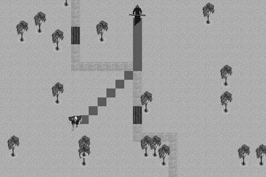

|
|
< Day Day Up > |
|
2.1 Basic Chasing and EvadingAs we said earlier, the simplest chase algorithm involves correcting the predator's coordinates based on the prey's coordinates so as to reduce the distance between their positions. This is a very common method for implementing basic chasing and evading. (In this method, evading is virtually the opposite of chasing, whereby instead of trying to decrease the distance between the predator and prey coordinates, you try to increase it.) In code, the method looks something like that shown in Example 2-1. Example 2-1. Basic chase algorithm
if (predatorX > preyX)
predatorX--;
else if (predatorX < preyX)
predatorX++;
if (predatorY > preyY)
predatorY--;
else if (predatorY < preyY)
predatorY++;
In this example, the prey is located at coordinates preyX and preyY, while the predator is located at coordinates predatorX and predatorY. During each cycle through the game loop the predator's coordinates are checked against the prey's. If the predator's x-coordinate is greater than the prey's x-coordinate, the predator's x-coordinate is decremented, moving it closer to the prey's x-position. Conversely, if the predator's x-coordinate is less than the prey's, the predator's x-coordinate is incremented. Similar logic applies to the predator's y-coordinate based on the prey's y-coordinate. The end result is that the predator will move closer and closer to the prey each cycle through the game loop. Using this same methodology, we can implement evading by simply reversing the logic, as we illustrate in Example 2-2. Example 2-2. Basic evade algorithm
if (preyX > predatorX)
preyX++;
else if (preyX < predatorX)
preyX--?>;
if (preyY > predatorY)
preyY++;
else if (preyY < predatorY)
preyY--;
In tile-based games the game domain is divided into discrete tiles—squares, hexagons, etc.—and the player's position is fixed to a discrete tile. Movement goes tile by tile, and the number of directions in which the player can make headway is limited. In a continuous environment, position is represented by floating-point coordinates, which can represent any location in the game domain. The player also is free to head in any direction. You can apply the approach illustrated in these two examples whether your game incorporates tile-based or continuous movement. In tile-based games, the xs and ys can represent columns and rows in a grid that encompasses the game domain. In this case, the xs and ys would be integers. In a continuous environment, the xs and ys—and zs if yours is a 3D game—would be real numbers representing the coordinates in a Cartesian coordinate system encompassing the game domain. There's no doubt that although it's simple, this method works. The predator will chase his prey with unrelenting determination. The sample program AIDemo2-1, available for download from this book's web site (http://www.oreilly.com/BOOK"), implements the basic chase algorithm in a tile-based environment. The relevant code is shown in Example 2-3. Example 2-3. Basic tile-based chase example
if (predatorCol > preyCol)
predatorCol--;
else if (predatorCol < preyCol)
predatorCol++;
if (predatorRow> preyRow)
predatorRow--;
else if (predatorRow<preyRow)
predatorRow++;
Notice the similarities in Examples 2-3 and 2-1. The only difference is that in Example 2-3 rows and columns are used instead of floating-point xs and ys. The trouble with this basic method is that often the chasing or evading seems almost too mechanical. Figure 2-1 illustrates the path the troll in the sample program takes as he pursues the player. Figure 2-1. Basic tile-based chaseAs you can see, the troll first moves diagonally toward the player until one of the coordinates, the horizontal in this case, equals that of the player's.[*] Then the troll advances toward the player straight along the other coordinate axis, the vertical in this case. Clearly this does not look very natural. A better approach is to have the troll move directly toward the player in a straight line. You can implement such an algorithm without too much difficulty, as we discuss in the next section.
|
|
|
< Day Day Up > |
|